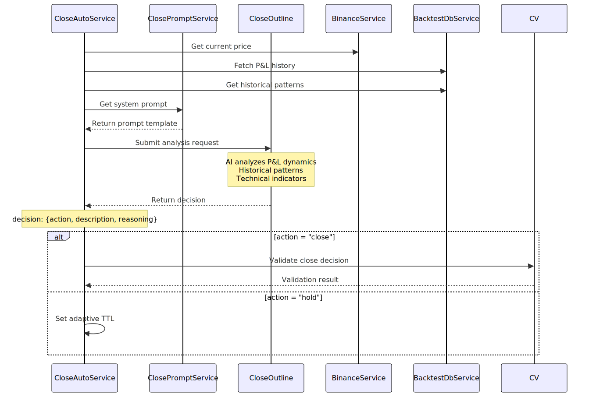
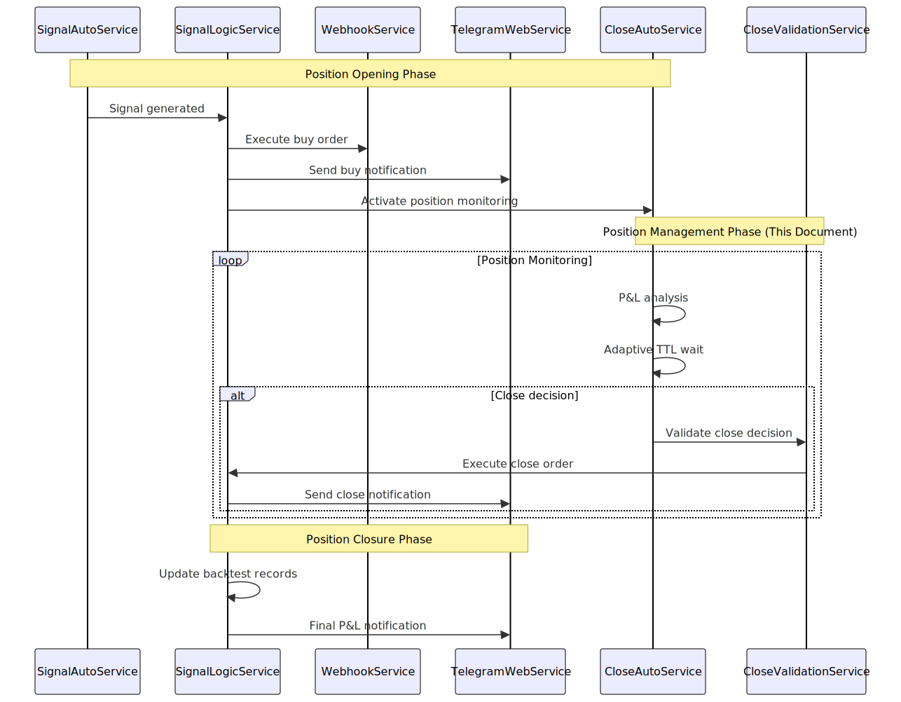

This document covers the position monitoring, early closure detection, and P&L-based decision making components of the Signal trading system. The CloseOutline service continuously monitors open positions and makes intelligent decisions about whether to hold or close positions based on real-time P&L dynamics, technical analysis, and historical patterns.
This page focuses specifically on the post-entry phase of trading. For information about position entry and signal generation, see Signal Generation and Validation. For broader risk assessment across market conditions, see Risk Assessment.
The CloseOutline system operates as the second stage in the three-stage AI decision pipeline, specializing in position management after entry. It continuously monitors open positions and evaluates whether to maintain or close them based on sophisticated P&L analysis.

| Service | Responsibility | File Location |
|---|---|---|
CloseOutline |
AI decision making for position closure | src/logic/outline/close.outline.ts |
CloseAutoService |
Automated position monitoring scheduler | Referenced in architecture |
CloseValidationService |
Risk-adjusted close decision validation | src/lib/signal/services/validation/CloseValidationService.ts |
ClosePromptService |
Prompt management for AI interactions | DI container registration |
BacktestDbService |
Position state and P&L history tracking | Referenced in consolidation system |
The position monitoring system tracks multiple dimensions of position performance to make informed closure decisions.

The system performs comprehensive breakeven analysis considering trading commissions and position performance:

The CloseOutline AI uses sophisticated prompt engineering to analyze position dynamics and make closure decisions based on professional trading intuition.
The system applies two primary decision paths based on P&L behavior:

The CloseOutline employs an adaptive Time-To-Live (TTL) system that adjusts monitoring frequency based on current P&L dynamics, optimizing between responsiveness and resource usage.

| P&L State | TTL Duration | Rationale |
|---|---|---|
| PROFIT_RISING_TTL | 2.5 minutes | Moderate frequency when profit growing and price rising |
| PROFIT_FALLING_TTL | 1.0 minutes | High frequency when profit declining and price falling |
| LOSS_RISING_TTL | 5.0 minutes | Low frequency when loss shrinking and price rising |
| LOSS_FALLING_TTL | 5.0 minutes | Low frequency when loss growing and price falling |
The CloseValidationService provides an additional layer of risk management and validation before executing closure decisions.

The validation system integrates with the feature flag architecture to provide granular control over closure behavior:
| Feature Flag | Purpose |
|---|---|
isFeatureCloseBreakevenEnable |
Controls microtrading mode with exclusive early closure |
isFeatureCloseWithProfitEnable |
Enables early closure of profitable positions |
isFeatureCloseWithLossEnable |
Enables early closure of losing positions |
isFeatureCloseRiskFilterEnable |
Applies risk filter for market condition consideration |
The position management system integrates seamlessly with the broader trading execution pipeline.

The system maintains comprehensive audit trails and historical data for analysis:

The close.json file demonstrates a real CloseOutline analysis for an XRPUSDT position:
Position Details:
P&L History Analysis:
| Price | P&L % | P&L USD | Breakeven | Time |
|---|---|---|---|---|
| 2.8922 | 0.00% | +0.00 | NO | 05:56:29 |
| 2.8943 | 0.07% | +0.07 | NO | 05:57:31 |
| 2.8952 | 0.10% | +0.10 | NO | 05:59:06 |
| 2.8937 | 0.05% | +0.05 | NO | 06:00:28 |
AI Decision: CLOSE
The system analyzes historical trading outcomes to inform current decisions:
This pattern indicates the system's effectiveness in preventing large losses while capturing available profits through intelligent early closure detection.